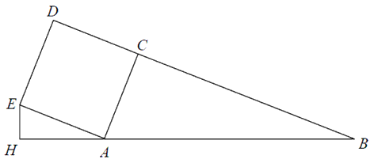
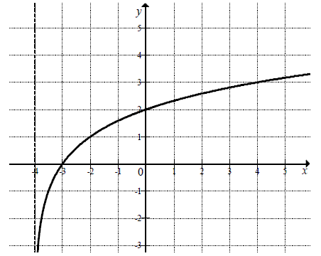
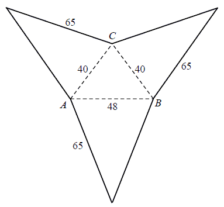

Poziom rozszerzony - dodatkowe zadania
Poniżej zamieściłem playlistę z różnymi zadaniami z
mojej strony, które wchodzą w zakres poziomu rozszerzonego.
W tym nagraniu wideo omawiam metodę rozwiązywania równań trygonometrycznych i
pokazuję jak najlepiej rysować wykresy sinusa i cosinusa.
Czas nagrania: 25
min.
Rozwiąż nierówność \(|2x - 5| - |x + 4| \le 2 - 2x\).
\(x\in (-\infty ;-7\rangle \cup \left\langle -1;\frac{11}{3}
\right\rangle \)
Dana jest funkcja \( f \) określona wzorem \(
f(x)=\frac{\vert{x+3}\vert+\vert{x-3}\vert}{x} \) dla każdej liczby rzeczywistej \( x\ne 0 \).
Wyznacz zbiór wartości tej funkcji.
\((-\infty ;-2\rangle \cup \langle 2;+\infty ) \)
Rozwiąż nierówność \(x^4 + x^2 \ge 2x\).
\(x\in (-\infty ;0\rangle \cup \langle 1;+\infty )\)
Rozwiąż równanie \( \sqrt{3}\cdot \cos x=1+\sin x \) w przedziale \( \langle 0,
2\pi \rangle \) .
\(x=\frac{3\pi }{2}\) lub \(x=\frac{\pi }{6}\)
Rozwiąż równanie \(\sin x|\cos x|=0,25\), gdzie \(x\in
\langle 0; 2\pi \rangle\).
\(x=\frac{\pi }{12}\) lub \(x=\frac{5\pi }{12}\) lub \(x=\frac{7\pi
}{12}\) lub \(x=\frac{11\pi }{12}\)
Rozwiąż równanie \(\cos 2x + \cos x + 1 = 0\) dla
\(x\in \langle 0,2\pi \rangle\).
\(x=\frac{\pi }{2}\) lub \(x=\frac{3\pi }{2}\) lub \(x=\frac{2\pi
}{3}\) lub \(x=\frac{4\pi }{3}\)
Rozwiąż równanie \(\cos2x + 2 = 3\cos x\).
\(x=\frac{\pi }{3}+2k\pi \) lub \(x=-\frac{\pi }{3}+2k\pi \) lub
\(x=2k\pi \) gdzie \(k\in \mathbb{Z} \)
Wyznacz wszystkie wartości parametru \(m\), dla których równanie \(x^2 + 2(1 - m)x + m^2 - m = 0\) ma dwa różne rozwiązania rzeczywiste
\(x_1\), \(x_2\) spełniające warunek \(x_1 \cdot x_2 \le 6m \le x_1^2 + x_2^2\) .
\(m\in \langle 0;\ 3-\sqrt{7} \rangle \)
Oblicz wszystkie wartości parametru \(m\), dla których równanie \(x^2 - (m + 2)x + m + 4 = 0\) ma dwa różne pierwiastki rzeczywiste
\(x_1\), \(x_2\) takie, że \({x_1}^4 + {x_2}^4 = 4m^3 + 6m^2 - 32m + 12\).
\(x=-\sqrt{14}\) lub \(x=\sqrt{14}\)
Wyznacz wszystkie wartości parametru \( m \), dla których funkcja kwadratowa \(
f(x)=x^2-(2m+2)x+2m+5 \) ma dwa różne pierwiastki \( \ x_1, x_2 \) takie, że suma kwadratów
odległości punktów \( A=(x_1, 0)\ \text{i}\ B=(x_2, 0) \) od prostej o równaniu \( x+y+1=0 \) jest
równa \( 6 \).
\(m=-3\)
Wyznacz wszystkie całkowite wartości parametru \( m \), dla których równanie \[
\left (x^3+2x^2+2x+1 \right) \left [ x^2-(2m+1)x+m^2+m \right]=0 \] ma trzy, parami różne,
pierwiastki rzeczywiste, takie że jeden z nich jest średnią arytmetyczną dwóch pozostałych.
\(m=-3\) lub \(m=0\)
Reszta z dzielenia wielomianu \(W(x) = 4x^3 - 5x^2 - 23x +
m\) przez dwumian \(x + 1\) jest równa \(20\). Oblicz wartość współczynnika \(m\) oraz
pierwiastki tego wielomianu.
\(m=6\), \(x=-2\) lub \(x=\frac{1}{4}\) lub \(x=3\)
Wykaż, że dla dowolnej wartości parametru \(m\) równanie: \(-x^2+(2m^2+3)x-m^4-1=0\) ma dwa różne pierwiastki dodatnie.
Ciąg liczbowy \((a, b, c)\) jest arytmetyczny i \(a + b + c =
33\), natomiast ciąg \((a - 1, b + 5, c + 19)\) jest
geometryczny. Oblicz \(a, b, c\).
\(\begin{cases} a=9 \\ b=11 \\ c=13 \end{cases} \) lub \(\begin{cases}
a=33 \\ b=11 \\ c=-11 \end{cases} \)
Trzy liczby tworzą ciąg geometryczny. Jeżeli do drugiej liczby dodamy \(8\), to
ciąg ten zmieni się w arytmetyczny. Jeżeli zaś do ostatniej liczby nowego ciągu arytmetycznego
dodamy \(64\), to tak otrzymany ciąg będzie znów geometryczny. Znajdź te liczby. Uwzględnij
wszystkie możliwości.
\((4,12,36)\) lub \(\left( \frac{4}{9}, -\frac{20}{9}, \frac{100}{9}
\right)\)
Liczby \(a, b, c\) tworzą w podanej kolejności ciąg geometryczny. Suma tych liczb
jest równa \(93\). Te same liczby, w podanej kolejności są pierwszym, drugim i siódmym wyrazem ciągu
arytmetycznego. Oblicz \(a, b\) i \(c\).
\(a=3\), \(b=15\), \(c=75\)
Wyznacz wzór na \(n\)-ty wyraz ciągu arytmetycznego wiedząc, że suma pierwszych
pięciu jego wyrazów jest równa \(10\), a wyrazy trzeci, piąty i trzynasty tworzą w podanej
kolejności ciąg geometryczny.
\(a_n=2\) lub \(a_n=3n-7\)
Trójkąt \( ABC\ \) jest wpisany w okrąg o środku \( S \). Kąty wewnętrzne \( CAB,
ABC \) i \( BCA \) tego trójkąta są równe, odpowiednio, \( \alpha , 2\alpha \) i \( 4\alpha \).
Wykaż, że trójkąt \( ABC \) jest rozwartokątny, i udowodnij, że miary wypukłych kątów środkowych \(
ASB, ASC \) i \( BSC\ \) tworzą w podanej kolejności ciąg arytmetyczny.
Ciąg geometryczny \( (a_n) \) ma \( 100 \) wyrazów i są one liczbami dodatnimi.
Suma wszystkich wyrazów o numerach nieparzystych jest sto razy większa od sumy wszystkich wyrazów o
numerach parzystych oraz \( \log a_1+\log a_2+\log a_3+...+\log a_{100}=100 \). Oblicz \( a_1 \).
\(a_1=10^{100}\)
Wiedząc, że ciąg \((a_n)\) jest ciągiem arytmetycznym oraz wyraz ogólny ciągu
\((b_n)\) określony jest wzorem \(b_n = 5^{a_n}\), wykaż, że ciąg \((b_n)\) jest ciągiem
geometrycznym. Wyznacz, w zależności od \(n\), iloczyn \(b_1\cdot b_2\cdot b_3\cdot ...\cdot b_n\),
przyjmując, że pierwszy wyraz ciągu \((a_n)\) jest równy \(1\), a jego różnica jest równa \(3\).
\(5^{\frac{3n^2-n}{2}}\)
Rzucamy cztery razy symetryczną sześcienną kostką do gry. Oblicz prawdopodobieństwo
zdarzenia polegającego na tym, że iloczyn liczb oczek otrzymanych we wszystkich czterech rzutach
będzie równy \(60\).
\(\frac{5}{108}\)
Oblicz, ile jest liczb naturalnych sześciocyfrowych, w zapisie których występuje
dokładnie trzy razy cyfra \(0\) i dokładnie raz występuje cyfra \(5\).
\(1920\)
Prosta o równaniu \(3x - 4y - 36 = 0\) przecina okrąg o
środku \(S = (3, 12)\) w punktach \(A\) i \(B\). Długość odcinka \(AB\)
jest równa \(40\). Wyznacz równanie tego okręgu.
\((x-3)^2+(y-12)^2=625\)
W układzie współrzędnych rozważmy wszystkie punkty \(P\) postaci: \(P = \left
(\frac{1}{2}m + \frac{5}{2}, m \right )\) gdzie \(m\in \langle -1,7 \rangle\). Oblicz najmniejszą i
największą wartość \(|PQ|^2\), gdzie \(Q = \left (\frac{55}{2}, 0 \right )\).
\(max = 651\frac{1}{4}\), \(min = 511\frac{1}{4}\)
Dany jest trójkąt \(ABC\), w którym \(|AC| = 17\) i \(|BC| = 10\). Na boku \(AB\)
leży punkt \(D\) taki, że \(|AD|:|DB|=3:4\) oraz \(|DC| = 10\). Oblicz pole trójkąta \(ABC\).
\(P=84\)
Dany jest trójkąt prostokątny \(ABC\), w którym \(|BC| = 30\), \(|AC| = 40\),
\(|AB| = 50\). Punkt \(W\) jest środkiem okręgu wpisanego w ten trójkąt. Okrąg wpisany w trójkąt
\(ABC\) jest styczny do boku \(AB\) w punkcie \(M\). Oblicz długość odcinka \(CM\). 
\(2\sqrt{145}\)
Na zewnątrz trójkąta prostokątnego \(ABC\), w którym \(|\sphericalangle ACB| = 90\)
oraz \(|AC| = 5\), \(|BC| = 12\) zbudowano kwadrat \(ACDE\) (patrz rysunek). Punkt \(H\) leży na
prostej \(AB\) i kąt \(|\sphericalangle EHA| = 90^\circ\). Oblicz pole trójkąta \(HAE\). 
\(\frac{750}{169}\)
Na rysunku przedstawiony jest fragment wykresu funkcji logarytmicznej \(f\)
określonej wzorem \(f(x)=\log_2 (x-p)\).  a) Podaj wartość \(p\).
b) Narysuj wykres funkcji określonej wzorem \(y = |f(x)|\).
c) Podaj wszystkie wartości parametru \(m\), dla których równanie \(|f(x)| = m\) ma dwa rozwiązania o przeciwnych znakach.
b) Narysuj wykres funkcji określonej wzorem \(y = |f(x)|\).
c) Podaj wszystkie wartości parametru \(m\), dla których równanie \(|f(x)| = m\) ma dwa rozwiązania o przeciwnych znakach.
a) \(p=-4\); c) \(m\in (2;+\infty )\)
W ostrosłupie \(ABCS\) podstawa \(ABC\) jest trójkątem równobocznym o boku długości
\(a\). Krawędź \(AS\) jest prostopadła do płaszczyzny podstawy. Odległość wierzchołka \(A\) od
ściany \(BCS\) jest równa \(d\). Wyznacz objętość tego ostrosłupa.
\(V=\frac{a^3d}{4\sqrt{3a^2-4d^2}}\)
Wyznacz cztery kolejne liczby całkowite takie, że największa z nich jest równa
sumie kwadratów trzech pozostałych liczb.
\(-1,0,1,2\)
Udowodnij, że jeżeli \(a + b \ge 0\), to prawdziwa jest nierówność \(a^3 + b^3 \ge
a^2b + ab^2\).
Wykaż, że prawdziwa jest nierówność \(\sqrt{2^{50} + 1} + \sqrt{2^{50} - 1} \lt
2^{26}\).
Trapez równoramienny \(ABCD\) o podstawach \(AB\) i \(CD\) jest opisany na okręgu o
promieniu \(r\). Wykaż, że \(4r^2 = |AB| \cdot |CD|\).
Udowodnij, że jeśli:
a) \(x, y\) są liczbami rzeczywistymi,
to \(x^2 + y^2 \ge 2xy\).
b) \(x, y, z\) są liczbami rzeczywistymi takimi, że \(x + y + z = 1\), to \(x^2 + y^2 + z^2 \ge 1/3\).
b) \(x, y, z\) są liczbami rzeczywistymi takimi, że \(x + y + z = 1\), to \(x^2 + y^2 + z^2 \ge 1/3\).
Udowodnij, że dla każdych dwóch liczb rzeczywistych dodatnich \( x, y \) prawdziwa
jest nierówność \((x+1)\frac{x}{y}+(y+1)\frac{y}{x}>2 \).
Dane są trzy okręgi o środkach \( A, B, C \) i promieniach równych odpowiednio \(
r, 2r, 3r \). Każde dwa z tych okręgów są zewnętrznie styczne: pierwszy z drugim w punkcie \( K \),
drugi z trzecim w punkcie \( L \) i trzeci z pierwszym w punkcie \( M \). Oblicz stosunek pola
trójkąta \( KLM \) do pola trójkąta \( ABC \).
\(\frac{1}{5}\)
Punkty \( A, B, C, D, E, F \) są kolejnymi wierzchołkami sześciokąta foremnego,
przy czym \( A=(0, 2\sqrt{3}),B=(2,0) \), a \( C \) leży na osi \( \ Ox \). Wyznacz równanie
stycznej do okręgu opisanego na tym sześciokącie przechodzącej przez wierzchołek \(E \).
\(y=-\frac{\sqrt{3}}{3}x+6\sqrt{3}\)
Oblicz objętość ostrosłupa trójkątnego \( ABCS \), którego siatkę przedstawiono na
rysunku. 
\(V=15360\)
Z urny zawierającej \(10\) kul ponumerowanych kolejnymi liczbami od \(1\) do \(10\)
losujemy jednocześnie trzy kule. Oblicz prawdopodobieństwo zdarzenia \( A \) polegającego na tym, że
numer jednej z wylosowanych kul jest równy sumie numerów dwóch pozostałych kul.
\(P(A)=\frac{1}{6}\)
Narysuj wykres funkcji: \[ f(x)=\begin{cases} -2^{x+1}+2,\quad \text{dla } x\le 0\\
-|x-4|+4,\quad \text{dla } x> 0 \end{cases} \] Określ liczbę rozwiązań równania \(|f(x)|=m\) w
zależności od parametru \(m\).
\(0\) rozwiązań \(\Leftrightarrow m
< 0\)
\(1\) rozwiązań \(\Leftrightarrow m > 4\)
\(2\) rozwiązań \(\Leftrightarrow m = 0 \lor m = 4\)
\(3\) rozwiązań \(\Leftrightarrow m \in \langle 2;4)\)
\(4\) rozwiązań \(\Leftrightarrow m \in (0;2)\)
\(1\) rozwiązań \(\Leftrightarrow m > 4\)
\(2\) rozwiązań \(\Leftrightarrow m = 0 \lor m = 4\)
\(3\) rozwiązań \(\Leftrightarrow m \in \langle 2;4)\)
\(4\) rozwiązań \(\Leftrightarrow m \in (0;2)\)
O wielomianie \(W(x)=2x^3+ax^2+bx+c\) wiadomo, że liczba \(1\) jest jego
pierwiastkiem dwukrotnym oraz że \(W(x)\) jest podzielny przez dwumian \(x + 2\). Oblicz
współczynniki \(a, b, c\). Dla obliczonych wartości \(a, b, c\) rozwiąż nierówność \(W(x+1)\lt 0\).
\(a=0\), \(b=-6\), \(c=4\); \(x\lt -3\)
Liczby \(a\), \(b\), \(k\) są całkowite i \(k\) jest różna od zera. Wykaż, że jeśli
liczby \(a+b\) oraz \(a\cdot b\) są podzielne przez \(k\), to liczba \(a^3-b^3\) też jest podzielna
przez \(k\).
Określ dziedzinę funkcji:
\(f(x)=\sqrt{\text{log}_{2}(\text{log}_{\frac{1}{3}}(x+1))}\).
\(x\in \left(-1;-\frac{2}{3}\right\rangle \)
Okrąg o środku \(A\) i promieniu długości \(r\) jest styczny zewnętrznie do okręgu
o środku \(B\) i promieniu długości \(R\) (\(R> r\)). Prosta \(k\) jest styczna jednocześnie do obu
okręgów i tworzy z prostą \(AB\) kąt ostry \(\alpha \). Wyznacz \(\sin \alpha \) w zależności od
\(r\) i \(R\).
\(\sin \alpha =\frac{R-r}{R+r}\)
W trójkącie \(ABC\) punkty \(K = (2, 2), L = (-2, 1)\) i \(M = (-1,-1)\) są
odpowiednio środkami boków \(AB, BC, AC\). Wyznacz współrzędne wierzchołków trójkąta \(A' B' C'\),
który jest obrazem trójkąta \(ABC\) w symetrii środkowej względem początku układu współrzędnych.
\(A'=(-3;0)\), \(B'=(-1;-4)\), \(C'=(5;2)\)
W trójkącie \(ABC\) kąt przy wierzchołku \(B\) jest ostry, długość promienia okręgu
opisanego na tym trójkącie jest równa \(5\) oraz \(|AC|=6, |AB|=10\). Na
boku \(BC\) wybrano taki punkt \(K\), że \(|BK|=2\). Oblicz długość odcinka \(AK\).
\(|AK|=6\sqrt{2}\)
W zielonym pudełku jest 10 monet pięciozłotowych i 5 monet dwuzłotowych, a w białym
pudełku są 2 monety pięciozłotowe i 3 monety dwuzłotowe. Z zielonego pudełka losujemy jedną monetę i
wrzucamy ją do białego pudełka. Następnie z białego pudełka losujemy jednocześnie 2 monety. Oblicz
prawdopodobieństwo, że z białego pudełka wylosujemy w sumie 7 złotych.
\(\frac{26}{45}\)
W ostrosłupie prawidłowym czworokątnym krawędź podstawy ma długość \(a\). Ostrosłup
ten przecięto płaszczyzną przechodzącą przez środki dwóch sąsiednich krawędzi podstawy i wierzchołek
ostrosłupa. Płaszczyzna tego przekroju tworzy z płaszczyzną podstawy kąt o mierze \(\alpha\). Oblicz
objętość tego ostrosłupa.
\(V=\frac{a^3\sqrt{2}\operatorname{tg} \alpha }{12}\)